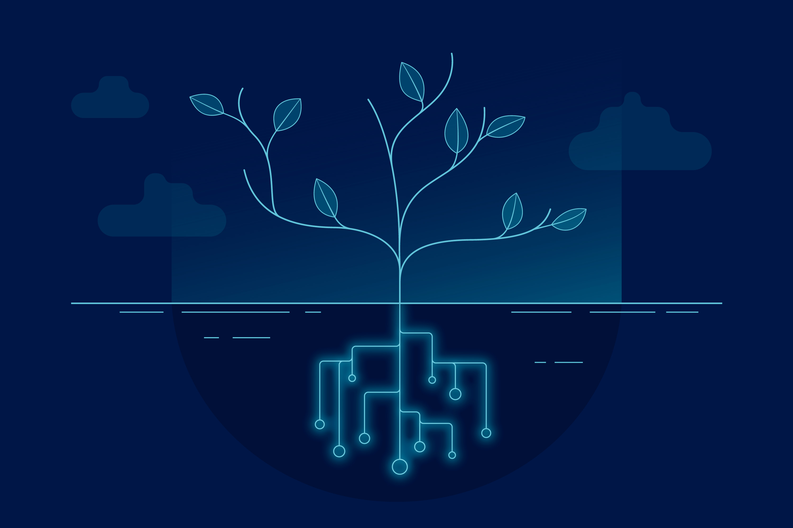

AgriTech Solutions
At Yottron, we are dedicated to transforming the agricultural landscape with our advanced AgriTech solutions. Our mission is to empower farmers with innovative technologies that enhance productivity, optimize resource utilization, and promote sustainable farming practices. By integrating cutting-edge sensors, IoT devices, and data analytics, we provide real-time insights and precision agriculture tools that enable informed decision-making and efficient farm management.
We understand the challenges faced by modern agriculture and are committed to delivering solutions that address these needs. From soil monitoring and weather forecasting to automated irrigation systems and crop health analysis, our comprehensive AgriTech solutions are designed to support every aspect of the farming process. At Yottron, we believe in the power of technology to create a more sustainable and productive agricultural future.
Join us in revolutionizing agriculture, and experience the future of farming today. With Yottron, you have a trusted partner dedicated to your success and the success of the global agricultural community.